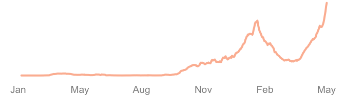
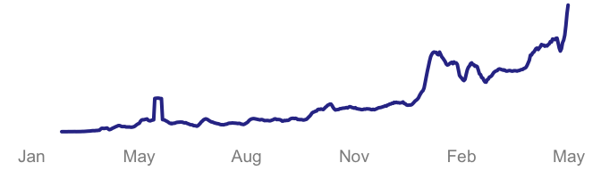
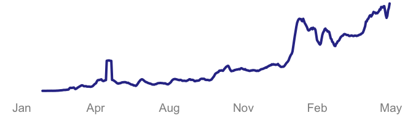

People vaccinated up to & including 24 May 2021
1st dose | cumulative total
+69,122 | 1,578,225
2nd dose | cumulative total
+25,887 | 905,271
People vaccinated up to 24 May 2021
1st dose | cumulative total
+69,122 | 1,578,225
2nd dose | cumulative total
+25,887 | 905,271
People tested positive
Daily 24 May 2021
+6,509
7-day average (week ending 17 May 2021 )
4,296
7-day average (week ending 24 May 2021 )
6,292 ▲ 1,996 (46.5%)

COVID-19 tests conducted
Daily 23 May 2021
106,208
7-day average (week ending 16 May 2021)
63,969
7-day average (week ending 23 May 2021)
100,435 ▲ 36,466 (57%)

Reported deaths
Daily 24 May 2021
61
7-day average (week ending 17 May 2021)
35
7-day average (week ending 24 May 2021)
52 ▲ 17 (48.6%)

Data are updated daily whenever they become available (date printed on the navigation bar shows when the data were last updated). All graphs (except the few trend lines on the ‘Daily summary’ homepage ) on this site are interactive. Here are a few tips to help you make the most of these graphs.
First , view the graphs on a computer screen whenever possible. You will be able to hover your cursor over each graph (mouseover) to display the tooltip text containing the y-value (e.g., number of vaccinations each day) corresponding to a specific date. On a touch device, the tooltip text will be displayed and updated when the finger moves across the graph.
Second, you’ll notice a horizontal scrollbar just underneath the x-axis of each graph. Use it to specify the date range to zoom in and out of the graph. Alternatively, you can click or tap on the range selector buttons to select some pre-configured ranges. More functions and graphs may be added in the near future so keep checking back.
If you’re interested in my work and wish to connect with me, or if you have any queries or suggestions, you can contact me through several means (click here or ‘About me’ to go to my GitHub page; contact details are listed there). Happy exploring!
All data pertinent to vaccinations: The Special Committee for Ensuring Access to COVID-19 Vaccine Supply (JKJAV)
Other data: Hasell, J., Mathieu, E., Beltekian, D. et al. A cross-country database of COVID-19 testing. Sci Data 7, 345 (2020). https://doi.org/10.1038/s41597-020-00688-8
Latest data provided on 24 May 2021
+69,122 | +49,085
new 1st doses were administered in the past 24 hours. | 7-day average.
+25,887 | +20,573
new 2nd doses were administered in the past 24 hours. | 7-day average.